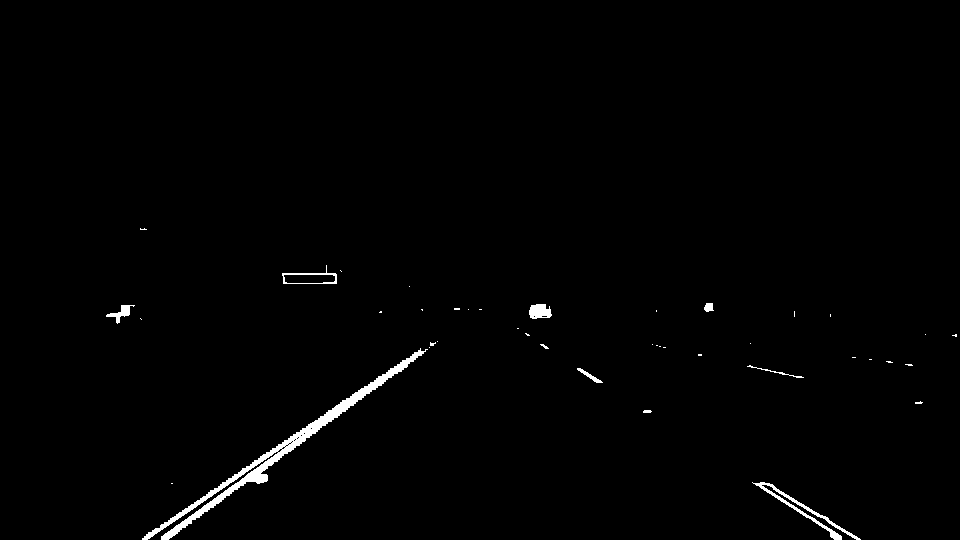

06
핵심 문제 해결 — 점선 차선 + 모폴로지 클로징
Problem Solving
문제
흰색
점선 차선
: 색상 마스크 ∩ Canny → 조각조각 끊김
초기 우측 차선 검출률:
64%
직전 값 덮어쓰기(홀드)로 가리는 것은
보정이 아님
해결
모폴로지 클로징
(7강) — 세로로 긴 구조 요소로 점선 이음
실제 검출 픽셀 증가 → 보정 없이 연속 검출
모폴로지 클로징 적용 →
우측 검출
64% → 100%
보정(홀드) 아닌 실제 검출 증가

모폴로지 클로징 후 차선 마스크